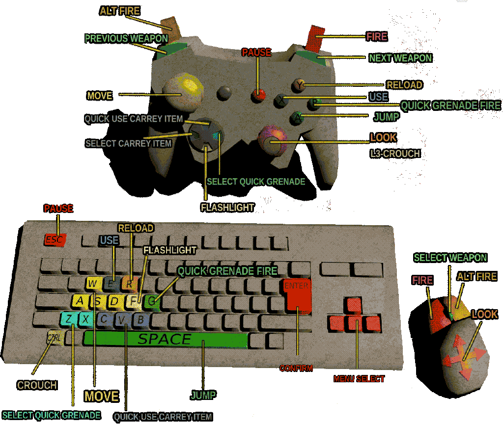

SO YOU WANNA TUTORIAL, HUH?
alright.
Heres goes...
CONTROLS

-MENUS
-LOOKING
-MOVEMENT
-WEAPONRY & COMBAT
-INTERACTION & CARRY ITEMS
HEADS UP DISPLAY
HEALTH SYSTEMs
-HEALTH & BLEEDING OUT
Health is technically seprated into 2 parts; Destination Health and Bleeding health;
Bleeding Health is how much Health you have left on Ushank,
Destination Health is where Bleeding Health will go.
Getting damaged via bullets, rockets or spurs, etc, will make you Destination health go to
however damaging the source is.
you will start to bleed out until it gets to the Destination A.K.A. when Ushanks' blood clots.
if Bleeding Health gets to 0, then you'll lose a life
-ARMOR
Armor
-REGAINING
regaining health is done in several ways, there are health Pickups (Such as Medkits)
that you simply walk into to gain health back, or using Inventory carry items
most options will make you regain Destination Health
Regaining armor can be done via walking into an armor pickup
ARCADEY SYSTEMS
-COMBO SYSTEM
what is the purpose of the combo system?:
Score!
-SCORE
what is the purpose of the score system?:
Lives!
-LIVES
what is the purpose of the Lives system?:
it'll take too long to make quicksaves!